Билет №23
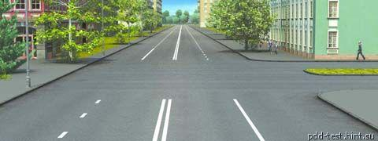
Сколько пересечений проезжих частей имеет этот перекресток?
Одно.
Два.
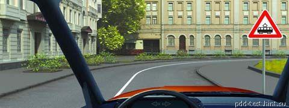
Этот дорожный знак:
Предупреждает о приближении к месту пересечения с трамвайной линией.
Предупреждает о приближении к трамвайной остановке.
Обязывает вас остановиться непосредственно перед пересечением с трамвайной линией.
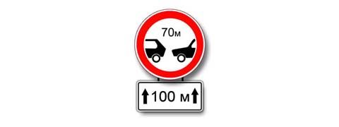
Эти знаки обязываются вас соблюдать дистанцию:
Менее 70 м на протяжении 100 м.
Более 70 м на протяжении 100 м.
От 70 м до 100 м.
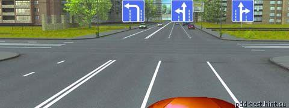
Двигаясь по средней полосе на легковом автомобиле, вы можете продолжить движение:
Только прямо.
Только прямо и налево.
Прямо, налево или в обратном направлении.
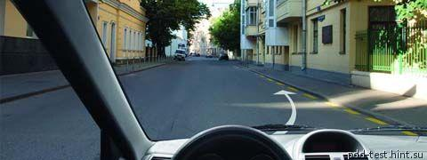
Разрешено ли вам поставить автомобиль на стоянку в указанном месте?
Разрешено.
Разрешено только с частичным заездом на тротуар.
Запрещено.
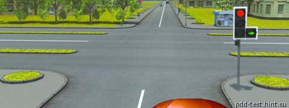
В каких направлениях вы можете продолжить движение?
Только направо в первый проезд.
Направо в первый и второй проезды.
Движение запрещено.
Обязаны ли вы подавать сигналы указателями поворота при начале движения в жилой зоне, обозначенной соответствующим знаком?
Да.
Нет.
Да, только при наличии в непосредственной близости пешеходов.
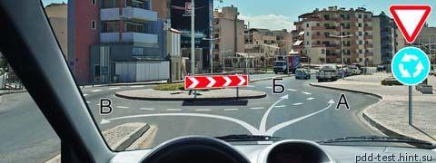
По какой траектории вы можете продолжить движение направо?
Только по А.
Только по А и Б.
По любой.
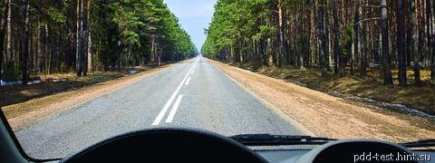
Разрешен ли вамм разворот на этом участке дороги?
Разрешен только при видимости дороги более 100 м.
Не разрешен.
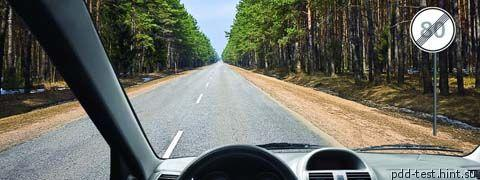
С какой максимальной скоростью вы можете продолжить движение на грузовом автомобиле с разрешенной максимальной массой менее 3,5 т?
90 км/ч.
70 км/ч.
60 км/ч.
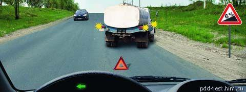
Выполняя объезд на подъеме, вы:
Должны уступить дорогу.
Имеете право проехать первым.
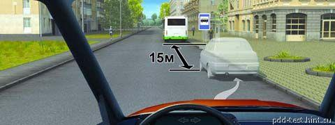
Разрешено ли вам поставить автомобиль на стоянку в указанном месте?
Разрешено.
Разрешено, если при этом не будут созданы помехи для движения маршрутных транспортных средств.
Запрещено.
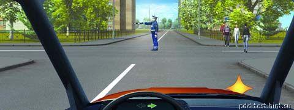
Как следует поступить в этой ситуации, если вам необходимо повернуть направо?
Остановиться перед перекрестком и, дождавшись другого сигнала регулировщика, повернуть направо.
Можно повернуть направо, уступив дорогу пешеходам.
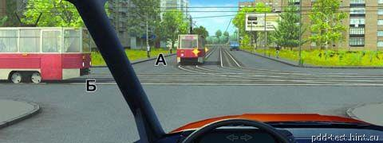
Вы намерены проехать перекресток в прямом направлении. Кому следует уступить дорогу?
Только трамваю А.
Только трамваю Б.
Обоим трамваям.
Никому.
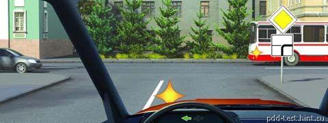
Вы намерены повернуть налево. Кому следует уступить дорогу?
Только автобусу.
Обоим транспортным средствам.
Никому.
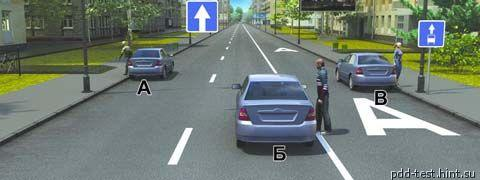
Кто из водителей правильно остановился для высадки пассажиров?
Только А.
Только В.
А и Б.
Б и В.
Достаточно ли в светлое время суток включения только противотуманных фар для обозначения транспортного средства при движении в тумане, когда видимость дороги не менее 300м?
Достаточно.
Недостаточно.
В каком из перечисленных случаев водителю следует оценивать обстановку сзади?
Только при резком торможении.
Только при торможении на дороге с мокрым или скользким покрытием.
При любом торможении.
Чем опасно длительное торможение с выключенным сцеплением (передачей) на крутом спуске?
Значительно увеличивается износ протектора шин.
Повышается износ деталей тормозных механизмов.
Перегреваются тормозные механизмы и уменьшается эффективность торможения.
Какие административные меры предусмотрены за управление транспортным средством, если полис (договор) обязательного страхования гражданско-правовой ответственности владельца наземного траспортного средства отсутствует?
Предупреждение или штраф от двадцати пяти до пятидесяти необлагаемых минимумов доходов граждан.
Штраф от двадцати пяти до пятидесяти необлагаемых минимумов доходов граждан.
Штраф от двадцати пяти до пятидесяти необлагаемых минимумов доходов граждан, или лишение права управления транспортными средствами на срок от 1 до 3 месяцев.
На верх